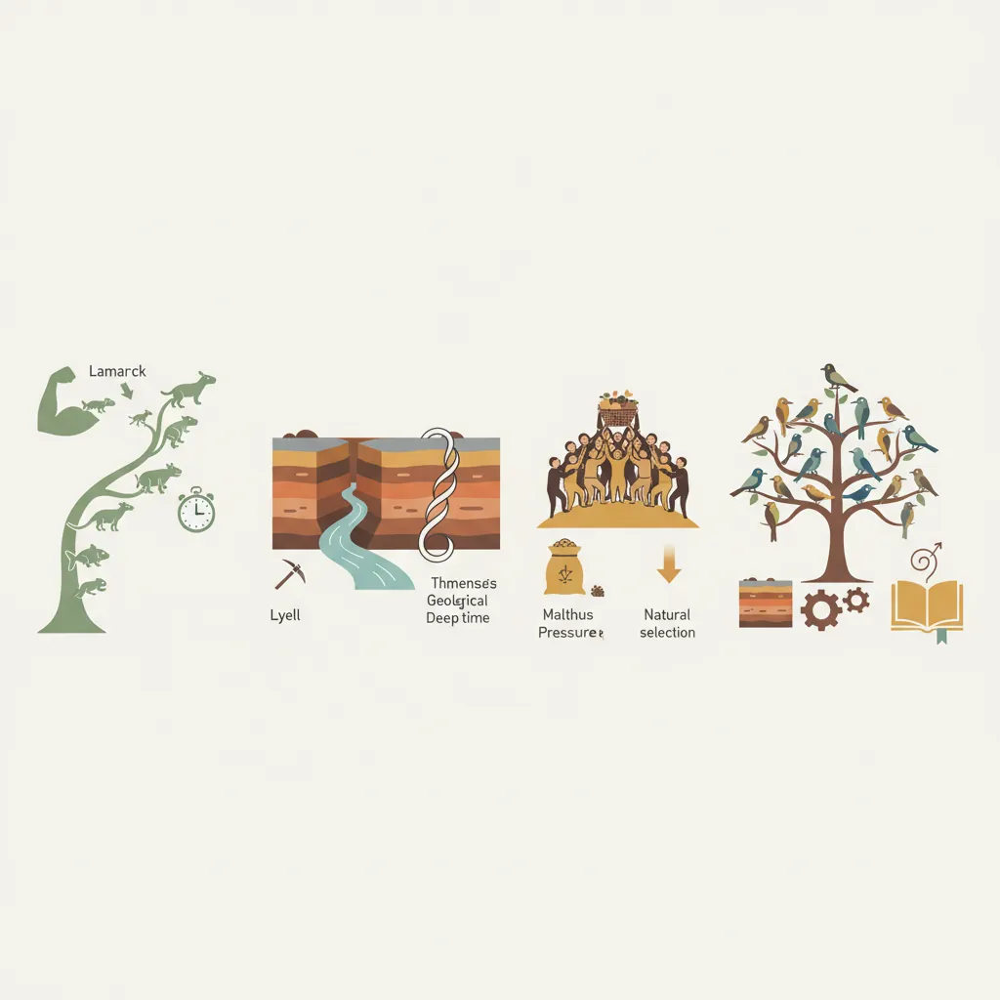
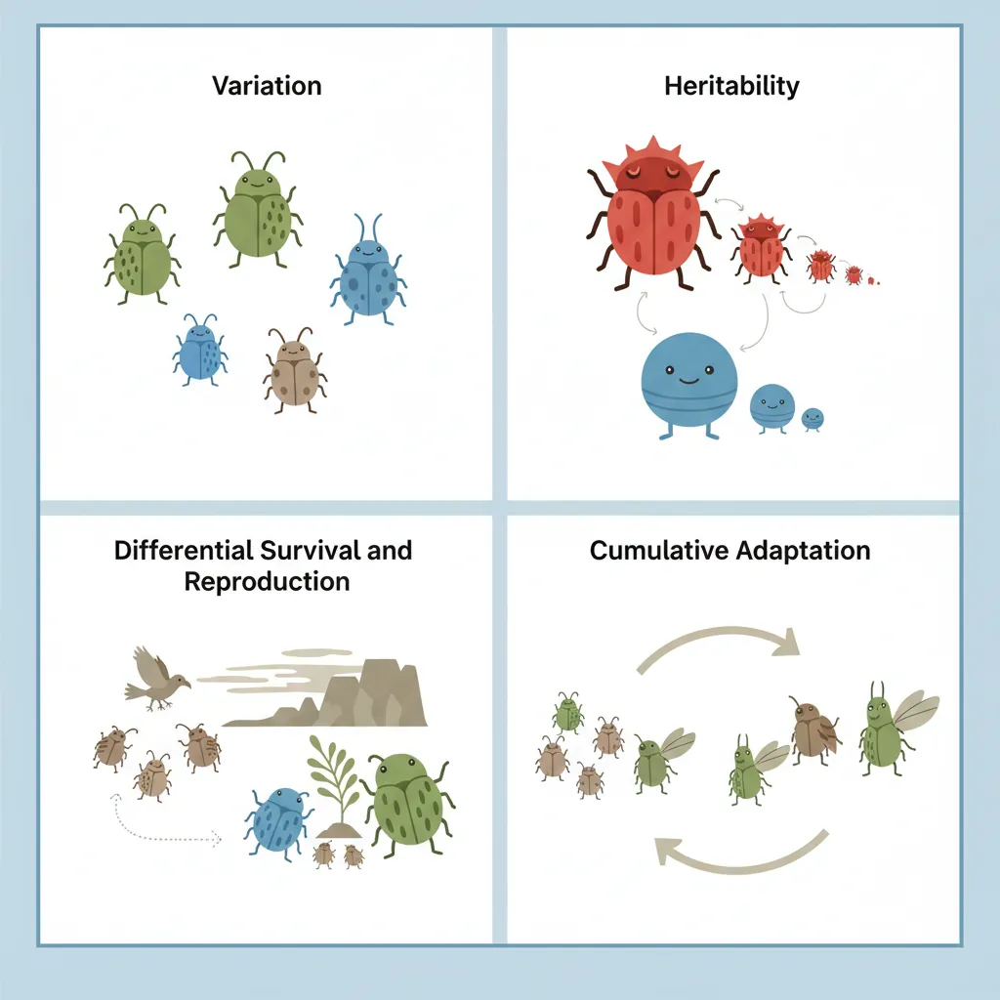
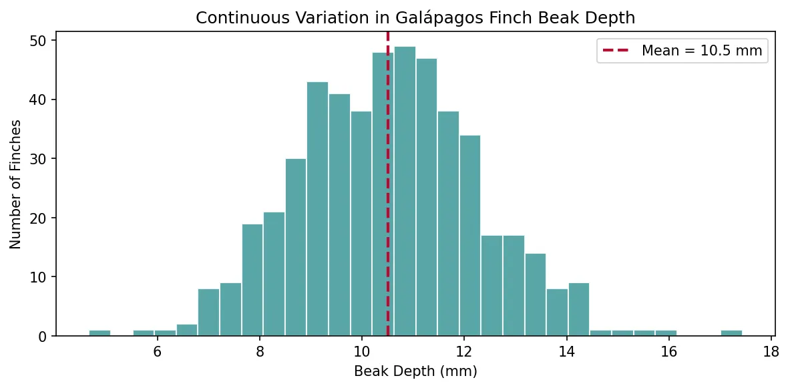
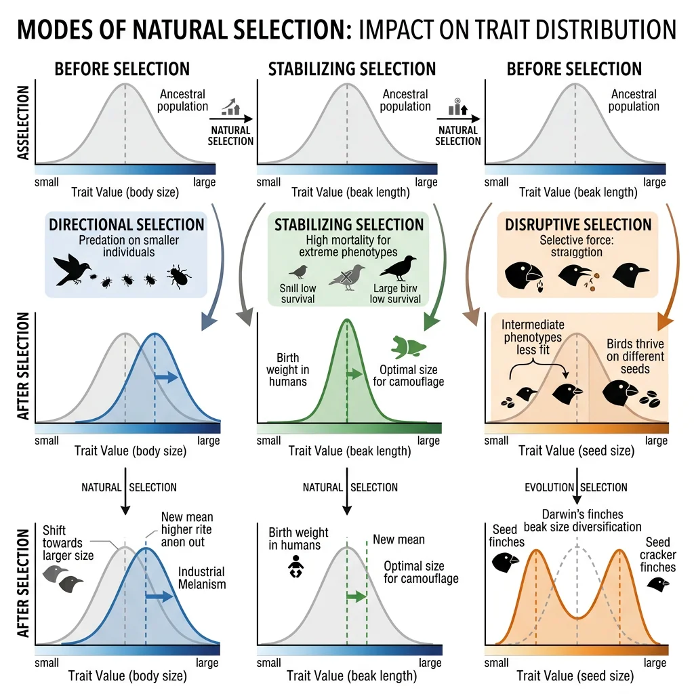
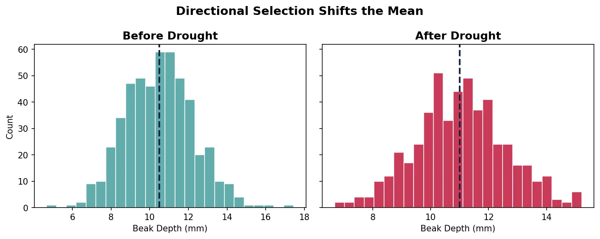
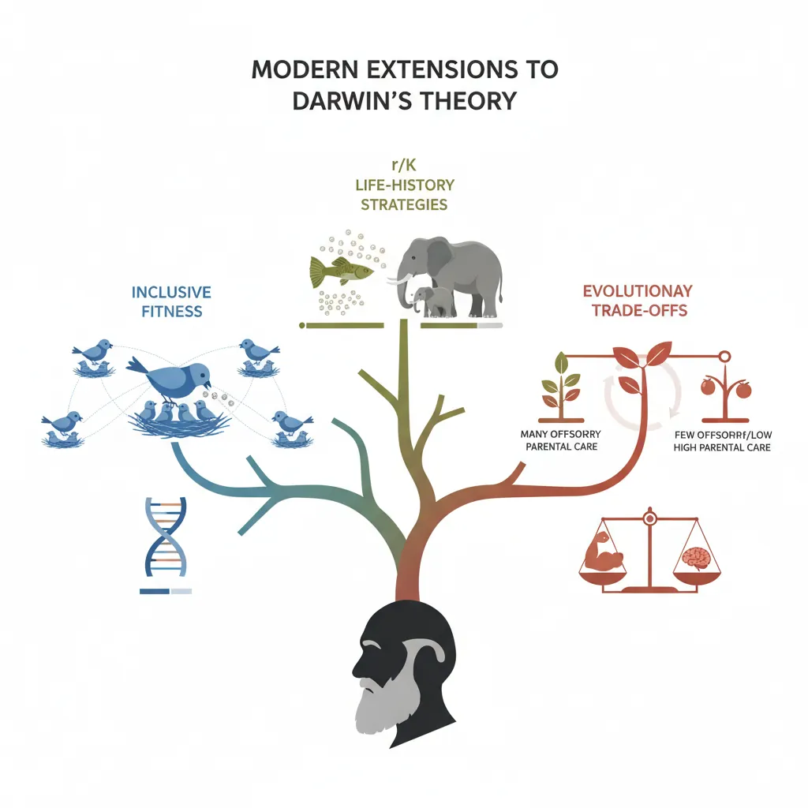
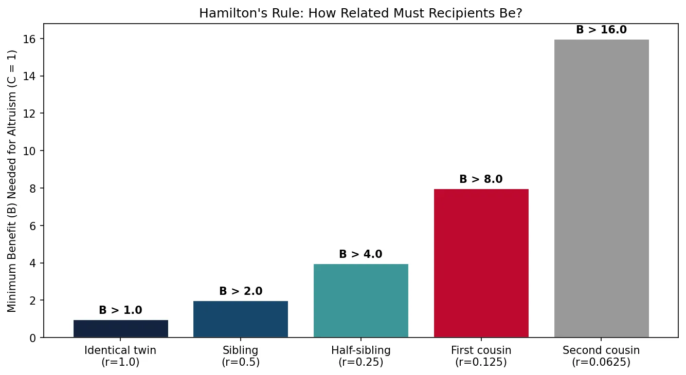
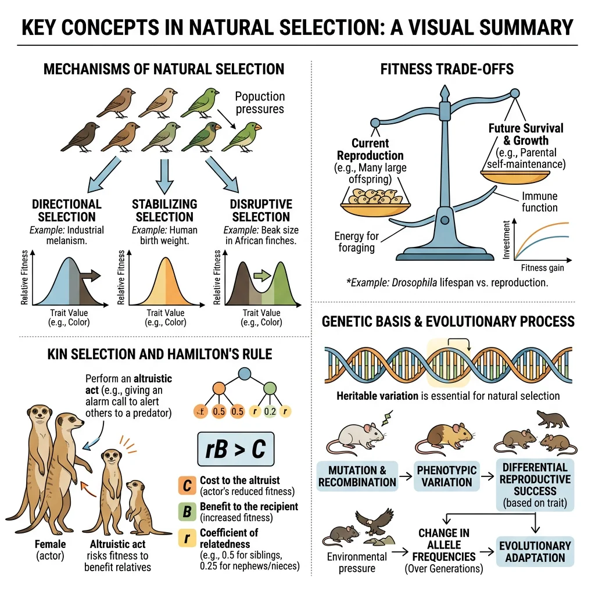
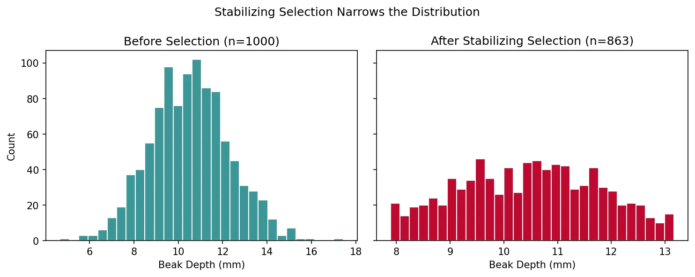

Evolutionary Biology Mastery
Darwin, Wallace & Natural Selection
Foundations, selection types, inclusive fitness, trade-offsGenetics of Evolution
DNA, population genetics, Hardy-Weinberg, molecular clocksSpeciation & Adaptive Radiation
Species concepts, reproductive isolation, rapid diversificationPhylogenetics & Taxonomy
Tree thinking, cladistics, molecular phylogenetics, classificationHuman Evolution & Migration
Hominin lineage, fossil evidence, Neanderthals, cultural evolutionCo-evolution & Symbiosis
Arms races, host-parasite, endosymbiosis, holobiontMass Extinctions & Biodiversity
Big Five extinctions, biodiversity patterns, conservationEvolutionary Developmental Biology
Hox genes, morphological innovation, heterochronyBehavioral & Social Evolution
Cooperation, game theory, sexual strategies, social insectsMathematical & Theoretical Evolution
Fitness landscapes, adaptive dynamics, ESS, selection modelsPaleontology & Fossil Interpretation
Radiometric dating, transitional fossils, taphonomyEvolutionary Genomics
Comparative genomics, gene duplication, HGT, epigeneticsFoundations of Evolutionary Theory
The idea that species change over time did not spring fully formed from a single mind. Before Charles Darwin published On the Origin of Species in 1859, several thinkers laid crucial groundwork — from ancient Greek philosophers who speculated about change in nature, to 18th-century naturalists who catalogued the living world. Understanding this intellectual arc is essential because it reveals how evidence gradually replaced speculation, transforming biology from a descriptive catalogue into a predictive science.

Pre-Darwin Ideas
Long before Darwin, several thinkers wrestled with the question of how life changes. Their ideas — though frequently wrong in mechanism — were essential stepping stones.
Key Pre-Darwinian Thinkers
Jean-Baptiste Lamarck (1744–1829) proposed that organisms could pass on traits acquired during their lifetime — a blacksmith's children inheriting strong arms, or a giraffe's neck growing longer from stretching. This "inheritance of acquired characteristics" was wrong mechanistically, but Lamarck was revolutionary in insisting that species do change over time.
Charles Lyell (1797–1875) established the principle of uniformitarianism — the idea that geological processes operating today (erosion, sedimentation, volcanic activity) are the same ones that shaped Earth over millions of years. This gave Darwin the deep time needed for gradual evolutionary change.
Thomas Malthus (1766–1834) argued in An Essay on the Principle of Population (1798) that populations tend to grow exponentially while resources grow only linearly. This creates a "struggle for existence" — a concept that directly inspired Darwin's mechanism of natural selection.
Darwin & Wallace
Charles Darwin (1809–1882) and Alfred Russel Wallace (1823–1913) independently arrived at the theory of evolution by natural selection — one of the most remarkable examples of simultaneous discovery in the history of science.
Darwin spent over 20 years collecting evidence and refining his theory after returning from the Beagle voyage in 1836. He was famously cautious, worried about the social and religious implications of his ideas. Meanwhile, Wallace — a self-taught naturalist working in the Malay Archipelago — independently conceived the same mechanism while suffering from malaria-induced fever in 1858. He sent his manuscript to Darwin, precipitating one of science's most famous priority crises.
The Linnean Society Joint Presentation
On 1 July 1858, papers by both Darwin and Wallace were read before the Linnean Society of London — arranged by their mutual friends Charles Lyell and Joseph Hooker. Remarkably, neither Darwin nor Wallace was present (Darwin was grieving the death of his infant son; Wallace was still in Southeast Asia). The society's president later declared that the year had not been "marked by any of those striking discoveries which at once revolutionise" a field — arguably the worst prediction in scientific history.
Darwin published On the Origin of Species on 24 November 1859. All 1,250 copies of the first edition sold out on the first day.
Despite the potential for rivalry, Darwin and Wallace maintained a respectful relationship. Wallace later referred to natural selection as "Darwinism" and spent decades defending the theory. Their shared discovery underscores a key principle: when evidence is ripe, ideas tend to converge independently.
The HMS Beagle Voyage
Darwin's five-year voyage aboard HMS Beagle (1831–1836) was the formative experience of his scientific life. As the ship's gentleman naturalist, the 22-year-old Darwin observed geology, fossils, and living organisms across South America, the Galápagos Islands, Australia, and beyond.
Key observations from the voyage included:
- Fossil glyptodonts in South America resembled living armadillos — suggesting descent with modification rather than separate creation
- Galápagos mockingbirds and tortoises varied between islands, each adapted to local conditions
- Geological formations confirmed Lyell's uniformitarianism — the Andes were still rising, coral atolls were sinking platforms
- Biogeographic patterns — similar environments on different continents housed different species, falsifying the idea that God placed each species in its ideal habitat
| Observation | Location | Evolutionary Significance |
|---|---|---|
| Finch beak variation | Galápagos Islands | Adaptive radiation — common ancestor diversified into ecological niches |
| Fossil glyptodonts | Patagonia, Argentina | Descent with modification — extinct forms resemble living relatives |
| Marine iguana | Galápagos Islands | Adaptation to unique niche — herbivorous sea-diving lizard found nowhere else |
| Rhea distribution | South America | Geographic replacement — closely related species replacing each other across regions |
Core Principles of Natural Selection
Natural selection is remarkably simple in concept yet staggeringly powerful in consequence. It requires only four conditions, and wherever all four are met — whether in bacteria, beetles, or birds — evolution inevitably follows. Darwin called it "descent with modification," and it remains biology's most unifying principle.

Variation Within Populations
No two individuals in a population are genetically identical (except identical twins, and even they accumulate somatic mutations). This variation arises from mutation (random changes in DNA), recombination (shuffling during sexual reproduction), and gene flow (immigration of alleles from other populations).
Variation can be continuous (height, weight — controlled by many genes) or discrete (blood type, flower colour — single-gene effects). Both types provide raw material for selection.
import numpy as np
import matplotlib.pyplot as plt
# Simulate continuous variation in beak depth (mm) across 500 finches
np.random.seed(42)
beak_depths = np.random.normal(loc=10.5, scale=1.8, size=500)
plt.figure(figsize=(8, 4))
plt.hist(beak_depths, bins=30, color='#3B9797', edgecolor='white', alpha=0.85)
plt.axvline(np.mean(beak_depths), color='#BF092F', linestyle='--', linewidth=2, label=f'Mean = {np.mean(beak_depths):.1f} mm')
plt.xlabel('Beak Depth (mm)')
plt.ylabel('Number of Finches')
plt.title('Continuous Variation in Galápagos Finch Beak Depth')
plt.legend()
plt.tight_layout()
plt.show()
print(f"Range: {beak_depths.min():.1f} – {beak_depths.max():.1f} mm")
print(f"Standard deviation: {np.std(beak_depths):.2f} mm")

Heritability
Variation matters only if it can be inherited. Heritability (denoted h²) measures the proportion of phenotypic variation in a population that is attributable to genetic differences. If h² = 0, traits are entirely environmentally determined; if h² = 1, they are entirely genetic.
Most traits of evolutionary interest have intermediate heritability. For instance, beak depth in Darwin's finches has an estimated h² ≈ 0.65 — meaning about 65% of the variation in beak size across a population is due to genetic differences, with the remaining 35% attributable to environmental factors like nutrition.
Differential Survival & Reproduction
The engine of natural selection is differential fitness — some individuals survive and reproduce more successfully than others because of their heritable traits. This is not random death; it is non-random elimination of less-fit variants.
Drought and Finch Beaks on Daphne Major
During the severe drought of 1977 on Daphne Major island in the Galápagos, seed availability dropped dramatically. Small, soft seeds disappeared first, leaving only large, hard seeds. Finches with larger, deeper beaks could crack these seeds; those with smaller beaks could not. The result: average beak depth increased by approximately 4% in a single generation — natural selection observed in real time.
When rains returned in 1983, small seeds became abundant again, and smaller-beaked finches regained their advantage. The Grants documented this oscillation over 40 years, providing the most detailed field study of natural selection ever conducted.
Adaptation
An adaptation is any heritable trait that increases an organism's fitness in its environment. Adaptations accumulate over many generations as natural selection favours beneficial variants and eliminates harmful ones.
Not every trait is an adaptation. Some features arise as by-products of selection on other traits (called spandrels, a term borrowed from architecture by Stephen Jay Gould). Others may be relics of ancestral environments that no longer apply (vestigial structures, such as the human appendix or whale pelvic bones).
| Concept | Definition | Example |
|---|---|---|
| Adaptation | Trait shaped by natural selection for current function | Polar bear white fur for Arctic camouflage |
| Exaptation | Trait co-opted for new function different from original | Feathers evolved for insulation, later used for flight |
| Spandrel | By-product of selection on another trait | Human chin — by-product of jaw bone interactions |
| Vestigial structure | Reduced remnant of ancestral adaptation | Whale pelvic bones, human wisdom teeth |
Types of Selection
Natural selection is not one-size-fits-all. Depending on which phenotypes are favoured, selection can push a population's trait distribution in different directions. Understanding these modes is critical for predicting how populations respond to environmental change.

graph TD
NS["Natural Selection
Types"]
DIR["Directional
Selection"]
STAB["Stabilizing
Selection"]
DIS["Disruptive
Selection"]
SEX["Sexual
Selection"]
KIN["Kin
Selection"]
NS --> DIR
NS --> STAB
NS --> DIS
NS --> SEX
NS --> KIN
DIR --> D1["Favors one extreme
Shifts mean
e.g., Peppered moths"]
STAB --> S1["Favors average
Reduces variance
e.g., Birth weight"]
DIS --> DI1["Favors both extremes
Bimodal distribution
e.g., Beak sizes"]
SEX --> SX1["Mate choice / competition
e.g., Peacock tails"]
KIN --> K1["Altruism toward relatives
Hamilton's rule: rB > C"]
style NS fill:#132440,stroke:#132440,color:#fff
style DIR fill:#e8f4f4,stroke:#3B9797
style DIS fill:#BF092F,stroke:#132440,color:#fff
Directional Selection
Directional selection favours individuals at one extreme of the trait distribution. Over time, the population mean shifts toward that extreme. This is the most intuitive form of selection — bigger beaks, faster legs, thicker shells.
import numpy as np
import matplotlib.pyplot as plt
# Directional selection: shifting mean beak depth over generations
np.random.seed(42)
generations = ['Before Drought', 'After Drought']
means = [10.5, 11.0]
stds = [1.8, 1.6]
fig, axes = plt.subplots(1, 2, figsize=(10, 4), sharey=True)
for i, (gen, mu, sd) in enumerate(zip(generations, means, stds)):
data = np.random.normal(mu, sd, 500)
axes[i].hist(data, bins=25, color='#3B9797' if i == 0 else '#BF092F',
edgecolor='white', alpha=0.8)
axes[i].axvline(mu, color='#132440', linestyle='--', linewidth=2)
axes[i].set_title(gen, fontsize=13, fontweight='bold')
axes[i].set_xlabel('Beak Depth (mm)')
axes[0].set_ylabel('Count')
plt.suptitle('Directional Selection Shifts the Mean', fontsize=14, fontweight='bold')
plt.tight_layout()
plt.show()

Stabilizing Selection
Stabilizing selection favours intermediate phenotypes and acts against extremes. This narrows the distribution of traits and is the most common type of selection in stable environments.
Human Birth Weight — Stabilizing Selection
Karn and Penrose analysed over 13,700 birth records from a London hospital and found that infant mortality was lowest at intermediate birth weights (approximately 3.2–3.6 kg). Both very low and very high birth weights were associated with increased mortality — very small babies had immature organs, while very large babies faced delivery complications. This classic U-shaped mortality curve demonstrated stabilizing selection operating on a human trait.
Disruptive Selection
Disruptive selection (also called diversifying selection) favours individuals at both extremes of the distribution and selects against intermediate phenotypes. This can split a population into two distinct groups and is thought to be a precursor to sympatric speciation.
A well-studied example occurs in African seed-cracking finches (Pyrenestes ostrinus), where beaks come in two distinct sizes — large and small — with few intermediates. Large-beaked birds specialise on hard seeds; small-beaked birds on soft seeds. Intermediate beaks are poor at cracking either type, so they have lower fitness.
Sexual Selection
Sexual selection is a special form of natural selection where traits are favoured because they increase mating success rather than survival. Darwin proposed this in 1871 to explain extravagant features like the peacock's tail, which clearly hinders survival but dramatically increases reproductive success.
Sexual selection operates through two mechanisms:
- Intersexual selection (mate choice): One sex (usually females) chooses mates based on display traits — bright plumage, elaborate songs, courtship dances. The "choosy" sex drives the evolution of ornamental traits in the other.
- Intrasexual selection (same-sex competition): Members of one sex (usually males) compete directly for access to mates — through fighting, territory defence, or sperm competition. This drives the evolution of weapons (antlers, tusks) and large body size.
Kin Selection
Kin selection explains the evolution of altruistic behaviour — actions that reduce the actor's fitness but increase the fitness of genetic relatives. At first glance, altruism seems to contradict natural selection (why sacrifice for others?), but kin selection resolves the paradox by showing that helping relatives propagates shared genes.
The most dramatic example is the sterile worker castes of eusocial insects. In honey bee colonies, workers (all female) sacrifice their own reproduction entirely, devoting their lives to helping the queen reproduce. Because of the unusual haplodiploid genetics of hymenopterans, workers share 75% of their genes with sisters (vs. 50% with their own offspring), making it genetically "cheaper" to raise sisters than daughters.
Hamilton's Rule: rB > C
W.D. Hamilton formalised kin selection with a simple inequality: an altruistic act will be favoured by selection when rB > C, where:
- r = coefficient of relatedness between actor and recipient
- B = reproductive benefit to the recipient
- C = reproductive cost to the actor
J.B.S. Haldane reportedly quipped: "I would lay down my life for two brothers or eight cousins" — a pithy summary of Hamilton's Rule (r = 0.5 for siblings, 0.125 for first cousins).
Modern Extensions
While Darwin's core insight remains intact, 20th- and 21st-century biologists have extended the theory in important ways — broadening "fitness" beyond the individual, recognising that organisms face trade-offs between competing life demands, and developing frameworks that predict optimal life strategies.

Inclusive Fitness
Inclusive fitness extends the concept of individual fitness to include the reproductive success of genetic relatives, weighted by relatedness. An organism's inclusive fitness = its direct fitness (own offspring) + its indirect fitness (extra offspring produced by relatives because of the organism's help).
This framework, developed by W.D. Hamilton, resolved the "problem of altruism" that puzzled Darwin himself. It explains why ground squirrels give alarm calls (alerting relatives to predators despite drawing attention to themselves), why worker bees sacrifice reproduction, and why human parents invest so heavily in their children.
import numpy as np
import matplotlib.pyplot as plt
# Hamilton's Rule: altruism is favoured when rB > C
# Demonstrate with varying relatedness
relatedness = np.array([1.0, 0.5, 0.25, 0.125, 0.0625])
labels = ['Identical twin\n(r=1.0)', 'Sibling\n(r=0.5)',
'Half-sibling\n(r=0.25)', 'First cousin\n(r=0.125)',
'Second cousin\n(r=0.0625)']
cost = 1 # fixed cost to the altruist
min_benefit_needed = cost / relatedness # B > C/r
plt.figure(figsize=(9, 5))
bars = plt.bar(labels, min_benefit_needed, color=['#132440', '#16476A', '#3B9797', '#BF092F', '#999999'],
edgecolor='white', linewidth=1.5)
plt.ylabel('Minimum Benefit (B) Needed for Altruism (C = 1)')
plt.title("Hamilton's Rule: How Related Must Recipients Be?")
for bar, val in zip(bars, min_benefit_needed):
plt.text(bar.get_x() + bar.get_width()/2, bar.get_height() + 0.3,
f'B > {val:.1f}', ha='center', fontweight='bold', fontsize=10)
plt.tight_layout()
plt.show()

Life-History Theory
Life-history theory studies how organisms allocate limited energy and time among competing demands — growth, reproduction, maintenance, and survival. Every organism faces a fundamental set of trade-offs: energy spent on reproduction cannot simultaneously be invested in growth or immune function.
| Strategy | Characteristics | Examples |
|---|---|---|
| r-selected (fast) | Many offspring, little parental care, short lifespan, rapid maturation | Bacteria, insects, annual plants, rabbits |
| K-selected (slow) | Few offspring, intensive parental care, long lifespan, delayed maturation | Elephants, whales, humans, oak trees |
| Bet-hedging | Spread risk across time or offspring types | Desert annuals (seed dormancy), salmon (variable return timing) |
Evolutionary Trade-Offs
No organism can maximise every trait simultaneously. Trade-offs are constraints imposed by limited resources, physics, or genetics. Understanding trade-offs is critical because they explain why organisms are not "perfectly" adapted — perfection in one trait comes at the cost of another.
Famous Evolutionary Trade-Offs
- Reproduction vs. longevity: Fruit flies (Drosophila) selected for early reproduction have shorter lifespans; those selected for late reproduction live longer (Rose & Charlesworth, 1981)
- Immune defence vs. sexual display: Male barn swallows with longer tail streamers attract more mates but have higher parasite loads (Møller, 1990)
- Speed vs. endurance: Cheetahs achieve 112 km/h but can sustain it for only 30 seconds; sled dogs run 160 km/day at moderate pace
- Brain size vs. gut size: The "expensive tissue hypothesis" proposes that the large human brain was partly funded by reducing gut size — enabled by cooking and higher-quality diets (Aiello & Wheeler, 1995)
Exercises & Review

Exercise 1: Identify the Selection Type
For each scenario, state whether directional, stabilizing, or disruptive selection is operating:
- In a frog population, medium-sized males have the highest mating success.
- An island with only very hard and very soft seeds favours finches with either large or small beaks.
- Antibiotic use kills susceptible bacteria, leaving only resistant strains.
- Human infants with average birth weight have the lowest mortality.
Show Answers
- Stabilizing — intermediate phenotype is favoured.
- Disruptive — both extremes are favoured, intermediates are selected against.
- Directional — one extreme (resistance) is favoured.
- Stabilizing — intermediate birth weight is optimal.
Exercise 2: Apply Hamilton's Rule
A ground squirrel gives an alarm call that costs it C = 3 fitness units but benefits nearby relatives by B = 8 fitness units. Will this behaviour be favoured if the recipient is:
- A sibling (r = 0.5)?
- A first cousin (r = 0.125)?
- An unrelated individual (r = 0)?
Show Answers
- Yes — rB = 0.5 × 8 = 4, which is greater than C = 3.
- No — rB = 0.125 × 8 = 1, which is less than C = 3.
- No — rB = 0 × 8 = 0, which is less than C = 3. Altruism toward strangers is not favoured by kin selection.
Exercise 3: Trade-Off Analysis
A bird species lives on an island where predators are absent. Predict how the following traits might evolve over many generations, explaining the trade-offs involved:
- Flight ability
- Body size
- Clutch size (number of eggs)
Show Answers
- Reduced or lost — flight is metabolically expensive. Without predators, the cost outweighs the benefit, so flightlessness can evolve (as in dodos, kiwis, and island rails).
- Increased — larger body size improves competitive ability for resources and thermoregulation, with no predation cost to offset it (island gigantism).
- Decreased — with higher adult survival, the trade-off shifts toward fewer, better-provisioned offspring (K-selection).
Exercise 4: Python Simulation
Modify the code below to simulate stabilizing selection on finch beak depth. Remove individuals whose beak depth is more than 1.5 standard deviations from the mean, then plot the surviving distribution.
import numpy as np
import matplotlib.pyplot as plt
# Original population
np.random.seed(42)
beaks = np.random.normal(loc=10.5, scale=1.8, size=1000)
# Apply stabilizing selection: keep only individuals within 1.5 SD of mean
mean_beak = np.mean(beaks)
sd_beak = np.std(beaks)
survivors = beaks[np.abs(beaks - mean_beak) <= 1.5 * sd_beak]
fig, axes = plt.subplots(1, 2, figsize=(10, 4), sharey=True)
axes[0].hist(beaks, bins=30, color='#3B9797', edgecolor='white')
axes[0].set_title(f'Before Selection (n={len(beaks)})')
axes[0].set_xlabel('Beak Depth (mm)')
axes[1].hist(survivors, bins=30, color='#BF092F', edgecolor='white')
axes[1].set_title(f'After Stabilizing Selection (n={len(survivors)})')
axes[1].set_xlabel('Beak Depth (mm)')
axes[0].set_ylabel('Count')
plt.suptitle('Stabilizing Selection Narrows the Distribution')
plt.tight_layout()
plt.show()
print(f"Original SD: {np.std(beaks):.2f}, Survivor SD: {np.std(survivors):.2f}")

Show Expected Output
The surviving distribution should be noticeably narrower than the original, with a reduced standard deviation (~1.2 vs ~1.8). About 13% of the population (those in the tails) should be eliminated.
Downloadable Worksheet
Natural Selection Analysis Worksheet
Document your understanding of natural selection principles. Download as Word, Excel, or PDF.
Conclusion & Next Steps
Charles Darwin and Alfred Russel Wallace gave science its most powerful organising principle: evolution by natural selection. From pre-Darwinian speculation through the Beagle voyage and beyond, we have traced how the simple logic of variation, heritability, and differential reproduction generates the stunning diversity of life on Earth.
We explored how directional, stabilizing, and disruptive selection reshape trait distributions, how sexual selection drives extravagant ornaments, and how kin selection explains apparent altruism. Modern extensions — inclusive fitness, life-history theory, and evolutionary trade-offs — complete the picture, revealing that organisms are not "perfectly" adapted but rather optimally compromised by the constraints they face.